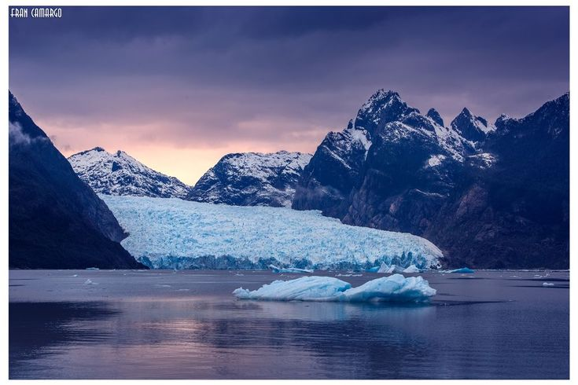
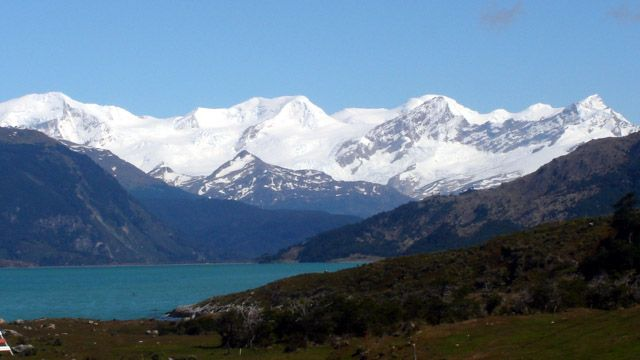

Northern Patagonian Ice Field
SAN RAFAEL GLACIER
Nestled within the Northern Patagonian Ice Field, San Rafael Glacier is one of Chile’s most iconic natural wonders, famous for its towering ice walls that collapse into the turquoise waters of the San Rafael Lagoon.
Accessible by boat or expedition cruises, visitors witness dramatic calving events as massive icebergs break away, creating an unforgettable spectacle of sound and motion. Its remote location in the Aysén Region makes the journey itself part of the adventure.

Tierra del Fuego
DARWIN RANGE GLACIERS
Located in the remote wilderness of Tierra del Fuego, the Darwin Range Glaciers cascade from rugged peaks into fjords and channels, forming one of the least explored glacial systems in Chile.
These glaciers are striking for their isolation, often accessible only by specialized cruises. Their pristine environment, where ice meets dense forests, offers a glimpse into a world virtually untouched by human presence.